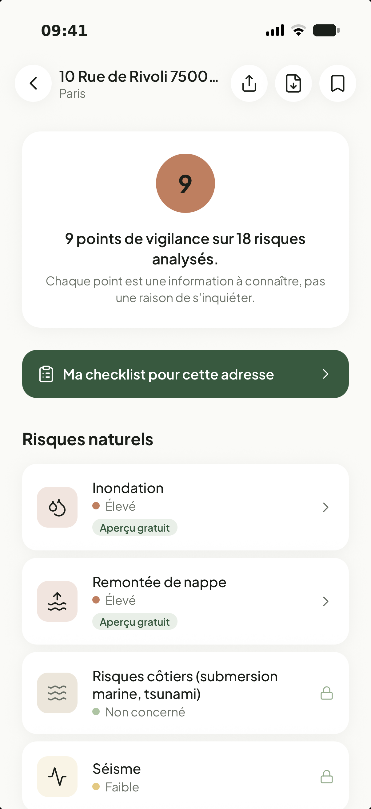

Les risques naturels de n'importe quelle adresse, en 5 secondes
Inondation, argile, radon, séisme, catastrophes naturelles… Tapez une adresse : RisqCheck analyse les 18 risques naturels et technologiques à partir des données officielles Géorisques — les mêmes que celles des notaires, enfin lisibles.
Gratuit, sans compte, sans publicité. Tout reste sur votre téléphone.
